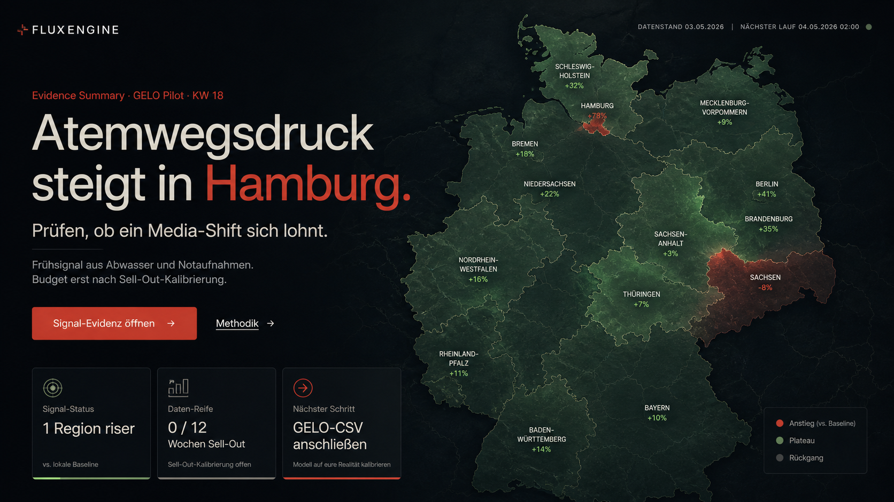
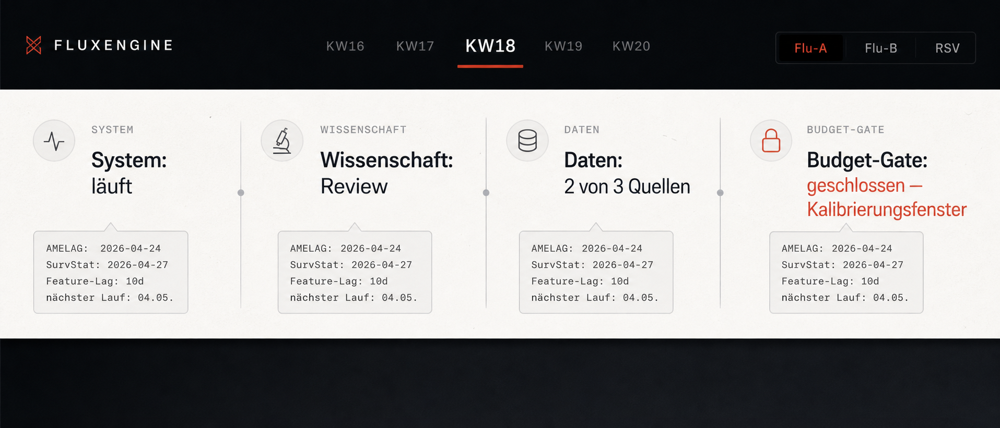
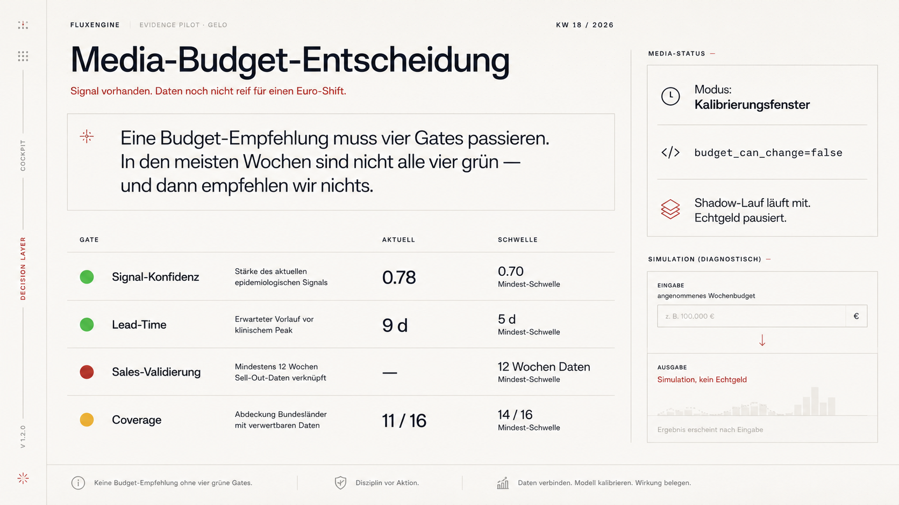

local image reference
FluxEngine Cockpit Referenzbilder
Diese drei Bilder sind lokale Design-Referenzen für die echte Cockpit-Umsetzung: Hero, Statusleiste und Budget-Gates. Die Produktion bleibt datengesteuert; die Bilder dienen nur als visuelle Leitplanke.



Prompt-Dokument: docs/design/fluxengine_image_reference_v1.md. Wenn ein generiertes Bild Text falsch schreibt, gilt immer die echte UI-Copy aus dem Cockpit.